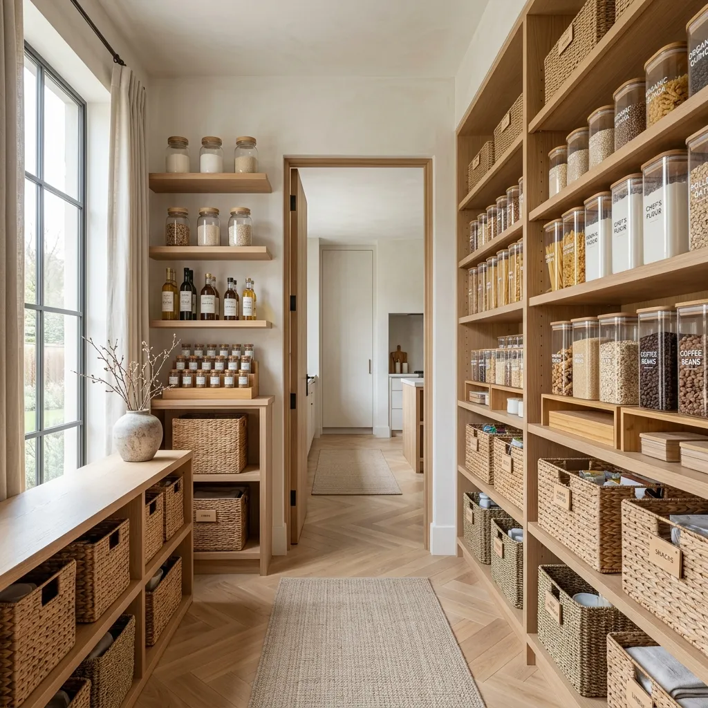
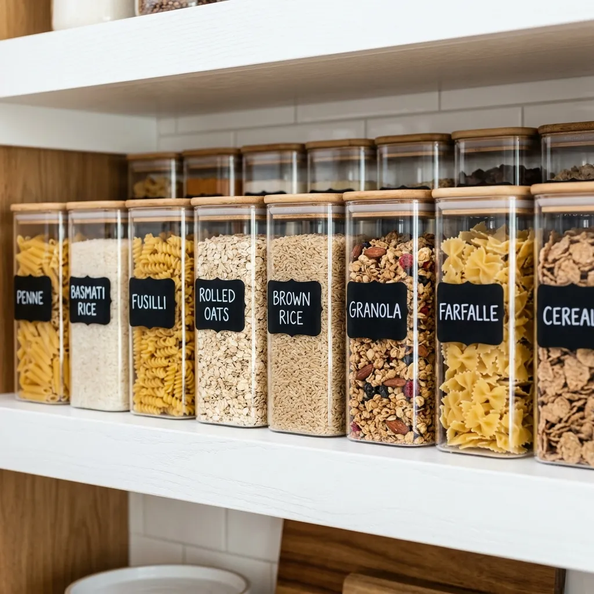
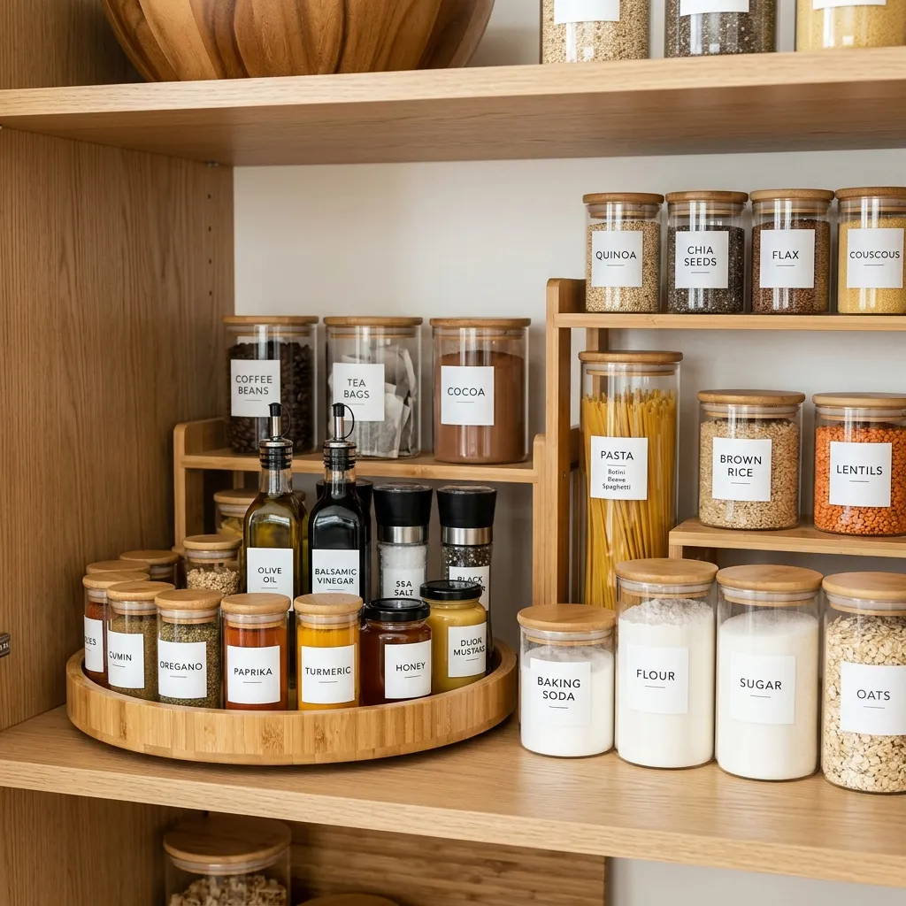
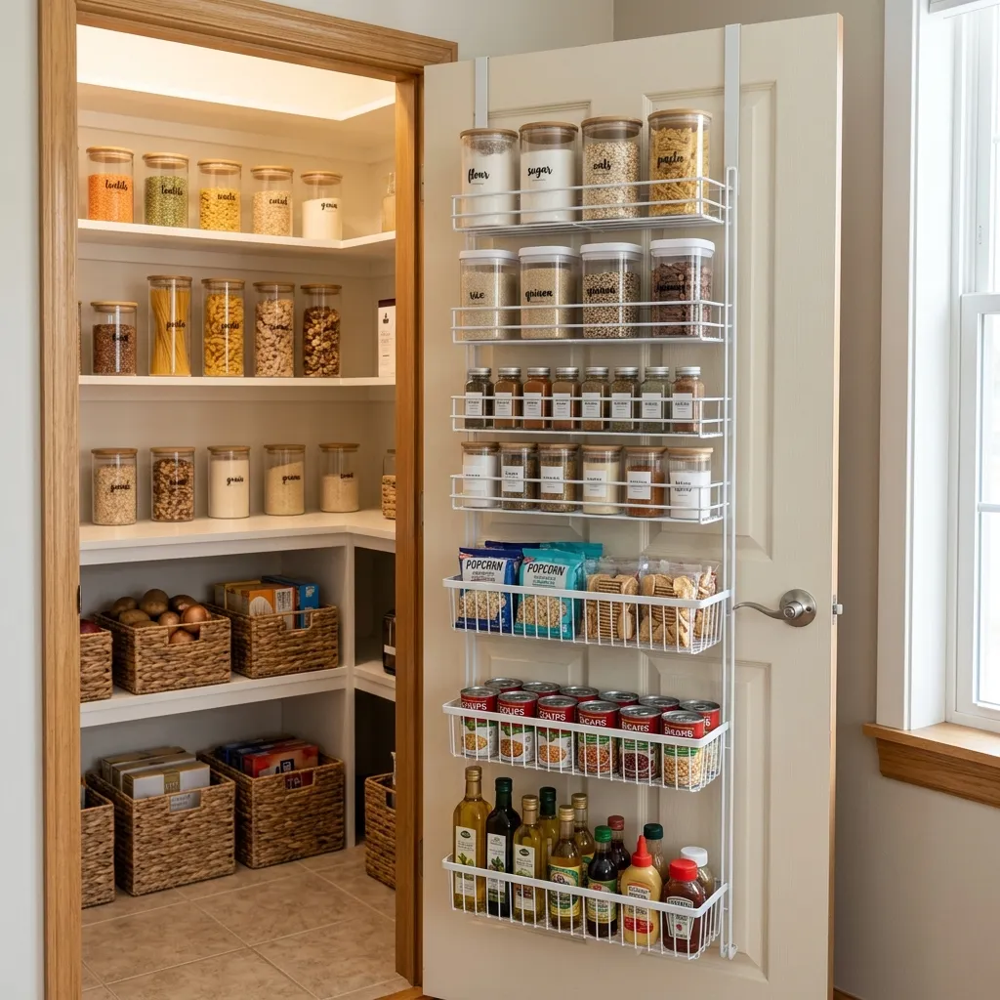
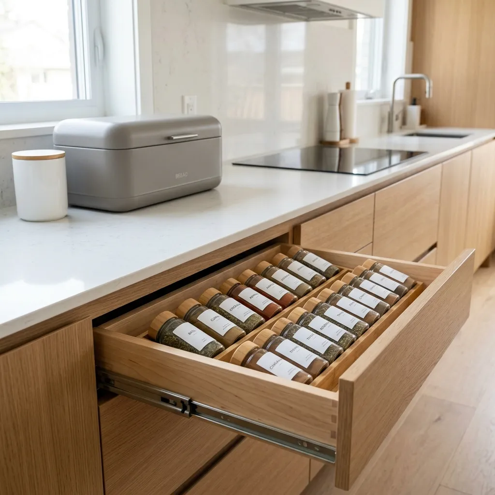

How to Build a Pinterest-Perfect Organized Pantry from Scratch
Learn how to build a Pinterest-perfect organized pantry from scratch. A step-by-step guide to transforming your kitchen storage with aesthetic containers and clever hacks.
We have all seen them. Those breathtakingly beautiful, hyper-organized pantries on Pinterest and Instagram. The ones where every single grain of rice seems to have its own designated spot, and there isn't a single garish cardboard cereal box in sight.
If you are currently staring at a pantry that looks like a grocery store exploded—with half-open chip bags, expired spices pushed to the back, and a leaning tower of canned goods—you might think a Pinterest-perfect pantry is impossible for your real life. But it's not.
A beautifully organized pantry isn't just about aesthetics; it is about functionality. When you can see exactly what you have, you stop overbuying at the grocery store. Meal prep becomes less stressful. Cooking becomes a joy rather than a chore.
Ready to transform your chaotic food storage into a serene, minimalist sanctuary? Here is the ultimate step-by-step guide to building a Pinterest-perfect pantry from scratch.

Step 1: The Great Purge (Empty Everything)
You cannot organize clutter. Before you buy a single container or label, you must take absolutely everything out of your pantry. Yes, every single can, box, and bag. Wipe down the shelves until they are sparkling clean.
Now, ruthless sorting begins. Throw away anything expired. Donate unopened food that your family will never eat. Group the remaining items into categories: Baking, Snacks, Breakfast, Canned Goods, and Pastas.
Pro Tip: Paint your pantry walls a fresh coat of crisp white or soft cream. A clean backdrop is essential for making your containers pop.
Step 2: Decanting (The Secret to Aesthetics)
The single biggest difference between a normal pantry and a Pinterest pantry is the absence of commercial packaging. Bright red cereal boxes and chaotic plastic bags create visual noise. The solution is decanting.

Invest in a matching set of high-quality, clear airtight containers. Transfer your flour, sugar, pasta, rice, and snacks into these bins. Not only does this look incredibly high-end, but it also keeps your food fresh longer and lets you see exactly when you are running low.
- The Containers: Clear Airtight Pantry Food Storage Containers Set
To take it to the absolute next level, you must label them. Do not use masking tape. Minimalist black chalkboard labels elevate the look instantly, giving it that bespoke, customized feel.
Step 3: Mastering the Deep Corners
The biggest enemy of an organized pantry is the "black hole" at the back of deep shelves where items go to die. If you can't reach it easily, you won't use it.

For corners, the Lazy Susan is your best friend. A spinning turntable allows you to store oils, vinegars, and sauces in deep corners while keeping everything instantly accessible with a flick of the wrist. Opt for bamboo rather than plastic to maintain a natural, warm aesthetic.
- The Spinner: Lazy Susan Turntable for Pantry Cabinet Organizer
For deep lower shelves, install pull-out drawer organizers. These slide out smoothly, bringing the items at the back right to you. For standard shelves, use tiered risers so you can actually see the cans or jars hiding behind the front row.
Step 4: Maximizing Vertical & Door Space
Most people complain they don't have enough pantry space, but they are leaving feet of vertical space completely empty. You must build up.

If you have tall shelves, slide under-shelf wire baskets onto them. These utilize the dead air space below the shelf above and are perfect for storing bread, tortillas, or lightweight snack bags.
For canned goods, a stackable dispenser is a game-changer. It feeds cans forward like a vending machine, ensuring you rotate your stock properly and saving massive amounts of flat shelf space.
Finally, never ignore the back of the pantry door. An over-the-door organizer rack is prime real estate for small, frequently used items like snacks, foil, or small jars.
Step 5: Counters & Finishing Touches
A perfectly organized pantry means nothing if your main kitchen counters are still a disaster zone. Carry the minimalist aesthetic out into the open kitchen.

If you must leave items on the counter, hide them beautifully. A sleek, modern bread box hides bulky loaves and buns while acting as a chic piece of decor.
For your spices, ditch the cluttered carousel taking up counter space. Move them into a drawer or a dedicated cabinet using a tiered spice rack organizer. Having all your spices uniform and laying flat or tiered makes cooking incredibly efficient.
Recommended: Spice Rack Organizer for Drawer or Cabinet
Final Thoughts: Maintaining the Magic
Building a Pinterest-perfect pantry takes an afternoon of hard work, but maintaining it is shockingly easy. Because everything has a dedicated, labeled home, putting groceries away becomes an effortless routine rather than a game of Tetris.
Take a step back, admire those perfectly aligned containers, and enjoy the peace of mind that comes from a truly organized home.